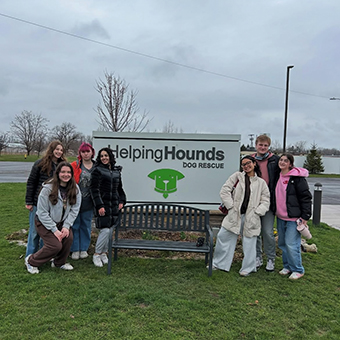

The fall semester sets the stage for everything First Year Players does throughout the year. It’s a time for new members to meet, get involved, and experience the unique culture of FYP.

What Happens in the Fall?
- Staff Retreat: Early in the semester, the FYP staff gathers for a retreat filled with bonding activities, workshops, and planning sessions.
- Workshops: We host theatre and performance workshops to help first years strengthen their skills and grow more confident.
- Fall Cabaret: A showcase of musical theatre numbers performed by SU students, with proceeds benefiting Front Row Players.
- Mentor/Mentee Program: Each first-year is paired with an upperclass staffer who serves as a mentor. 
- Community Engagement: The fall semester emphasizes connection with each other and the broader Syracuse community.


By the end of the fall, first years are fully immersed in the FYP family, ready to take on the challenge and excitement of the spring musical.